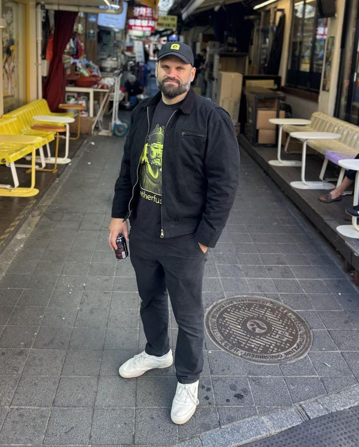

Dave Taylor

Co-founder and CEO of Etherfuse, currently building new financial primitives.
Before Etherfuse I was leading teams at Boeing and Apple, and studied at MIT.
I live in Irvine, California.
Papers
6
-
The Missing Link2026
Beyond USD, Part II: why local currencies need a risk-free rate that works like money.
-
Beyond USD, Part I: the case for global, yield-bearing primitives: why local-currency government debt, not dollar stablecoins, should be the base layer for on-chain FX.
-
Comment letter to the SEC Crypto Task Force, with Brogan Law, proposing a sandbox for trading tokenized foreign sovereign bonds in the US.
-
Local-currency stablecoins backed by government bonds instead of cash.
-
How Etherfuse tokenizes sovereign bonds one-for-one and passes the yield through to holders.
-
Why decentralizing the infrastructure behind proof-of-stake networks matters, and how to measure it.
Articles
9
Talks
25
-
Stellar Development Foundation, with RedStone, WisdomTree, Archax and RedSwan.
-
Stabledash.
-
Arcane Finance podcast, episode 3.
-
Bluechip.
-
On The Brink with Castle Island, episode 620.
-
Stableminded, Stabledash.
-
Short video walk-through of the paper.
-
block by block podcast with Denelle Dixon, Stellar Development Foundation.
-
Bits and Borders with Aaron Stanley.
-
Lightning Talks2025
Stellar Meridian 2025, with Ondo Finance and Kredete.
-
Stellar i³ Awards.
-
Bitso Stablecoin Conference.
-
Stabull Stories panel with Bitso and Brazil Crypto Report.
-
Solfate Podcast, on bringing foreign exchange on-chain.
-
Solana Crossroads, Istanbul.
-
The reDeFined Podcast, episode 14.
-
Espacio Cripto, Frontera.
-
RWAs2025
Solana APEX, Mexico City.
-
Lumen Loop Podcast.
-
Stellar Meridian, London.
-
RWAs on Solana2024
Solana Crossroads.
-
Solana podcast.
-
SolanaFloor, TNB episode 48.
-
Fintech Talks #119, Día Fintech. In Spanish.
-
Solana Breakpoint, Amsterdam.
Musings
1
-
One person and an AI ran every authorship and borrowing test they could on the 1830 Book of Mormon, against 23,872 authors from its era. Every number links to the file it came from.